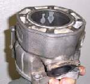
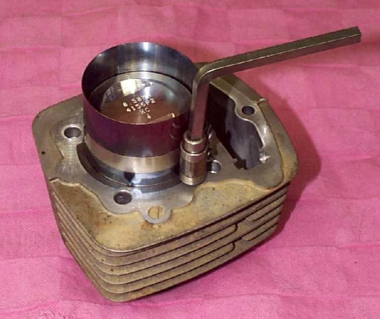

New rings and a fresh piston should cure oil smoke. If the engine smokes after it has been run in, the rings are not sealing against the cylinder, or the cylinder was damaged earlier. New rings do not fix a worn or overheated bore.
Is it safe to ride?
Ride with care. Smoke itself is not dangerous, but low compression and oil burning will foul the plug. If the engine was run hot before the rebuild, the damage can get worse.
Quick checks first
- Has the engine been run long enough for the rings to bed in? Drive gently and let the engine work through a few heat cycles.
- Is the oil level correct, and not overfilled?
- Was the bore honed to leave a fine cross-hatch before the new rings went in?
- Are the rings marked side up, with gaps staggered?
Diagnose it step by step
1Were piston clearance, taper and out-of-round measured before the rebuild?
- No: do it now. Measure piston-to-cylinder clearance and bore wear.
- Yes: go to step 2.
2Is there a glazed, shiny bore or no cross-hatch?
- Yes: the rings cannot seat. Deglaze and refit. Fit piston rings and deglaze the bore.
- No: go to step 3.
3Does the compression test show a low reading?
- Yes: a wet test shows whether rings or valves leak. Test engine compression.
- No: go to step 4.
4Was the engine seized or overheated before the rebuild?
- Yes: the cylinder metal may have lost its hardness and will keep smoking. The cure is a new cylinder or sleeve. Check the head for flatness too.
- No: go to step 5.
5Four-stroke: do the valve guides or valve stem seals leak oil?
- Smoke on starting or after a long closed-throttle run points to the valve end. Check the valve seals and guides: Check a valve and seat with a solvent leak test.
Causes, most likely first
| Cause | How to confirm | Fix |
|---|---|---|
| Ring not seated, bore not deglazed | Smoke goes down after correct honing | Fit piston rings and deglaze the bore |
| Wrong or mismatched ring size | Gap or groove wrong | Fit the correct ring set |
| Bore worn, tapered or out of round | Measurements out of limits | Bore to oversize, new piston |
| Overheated cylinder lost its temper | Engine was seized or very hot earlier | New cylinder or liner |
| Rust pits in the bore | Visible pits where rings stop | Bore to a larger oversize |
| Worn valve seals or guides (four-stroke) | Puff of smoke at start-up | Replace seals; guides if loose |